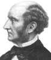

Philosophy Pages
| Dictionary | Study Guide | Logic | F A Q s | ||
|---|---|---|---|---|---|---|
| History | Timeline | Philosophers | Locke | |||
| Philosophy Pages
| Dictionary | Study Guide | Logic | F A Q s | ||
|---|---|---|---|---|---|---|
| History | Timeline | Philosophers | Locke | |||
Bentham's moral theory was founded on the assumption that it is the consequences of human actions that count in evaluating their merit and that the kind of consequence that matters for human happiness is just the achievement of pleasure and avoidance of pain. He argued that the hedonistic value of any human action is easily calculated by considering how intensely its pleasure is felt, how long that pleasure lasts, how certainly and how quickly it follows upon the performance of the action, and how likely it is to produce collateral benefits and avoid collateral harms. Taking such matters into account, we arrive at a net value of each action for any human being affected by it.
All that remains, Bentham supposed, is to consider the extent of this pleasure, since the happiness of the community as a whole is nothing other than the sum of individual human interests. The principle of utility, then, defines the meaning of moral obligation by reference to the greatest happiness of the greatest number of people who are affected by performance of an action. Similarly, Bentham supposed that social policies are properly evaluated in light of their effect on the general well-being of the populations they involve. Punishing criminals is an effective way of deterring crime precisely because it pointedly alters the likely outcome of their actions, attaching the likelihood of future pain in order to outweigh the apparent gain of committing the crime. Thus, punishment must "fit" the crime by changing the likely perception of the value of committing it.
|

Mill Life and Works . . Utilitarianism . . Individual Liberty . . Women's Rights Bibliography Internet Sources |
A generation later, utilitarianism found its most effective exponent in John Stuart Mill. Raised by his father, the philosopher James Mill, on strictly Benthamite principles, Mill devoted his life to the defence and promotion of the general welfare. With the help his long-time companion Harriet Taylor, Mill became a powerful champion of lofty moral and social ideals.
Mill's Utilitarianism (1861) is an extended explanation of utilitarian moral theory. In an effort to respond to criticisms of the doctrine, Mill not only argued in favor of the basic principles of Jeremy Bentham but also offered several significant improvements to its structure, meaning, and application. Although the progress of moral philosophy has been limited by its endless disputes over the reality and nature of the highest good, Mill assumed from the outset, everyone can agree that the consequences of human actions contribute importantly to their moral value. (Utilitarianism 1)
Mill fully accepted Bentham's devotion to greatest happiness principle as the basic statement of utilitarian value:
Against those who argue that the utilitarian theory unreasonably demands of individual agents that they devote their primary energies to the cold-hearted and interminable calculation of anticipated effects of their actions, Mill offered a significant qualification. Precisely because we do not have the time to calculate accurately in every instance, he supposed, we properly allow our actions to be guided by moral rules most of the time. Partly anticipating the later distinction between act and rule utilitarianism, Mill pointed out that secondary moral principles at the very least perform an important service by providing ample guidance for every-day moral life. Finally, however, he emphasized that the value of each particular action—especially in difficult or controversial cases—is to be determined by reference to the principle of utility itself.
What motivates people to do the right thing? Mill claimed universal agreement on the role of moral sanctions in eliciting proper conduct from human agents. (Utilitarianism 3) But unlike Bentham, Mill did not restrict himself to the socially-imposed external sanctions of punishment and blame, which make the consequences of improper action more obviously painful. On Mill's view, human beings are also motivated by such internal sanctions as self-esteem, guilt, and conscience. Because we all have social feelings on behalf of others, the unselfish wish for the good of all is often enough to move us to act morally. Even if others do not blame or punish me for doing wrong, I am likely to blame myself, and that bad feeling is another of the consequent pains that I reasonably consider when deciding what to do.
In Chapter Four, Mill offers as "proof" of the principle of utility an argument originally presented by his father, James Mill. The best evidence of the desirability of happiness is that people really do desire it; and since each individual human being desires her own happiness, it must follow that all of us desire the happiness of everyone. Thus, the Mills argued, the greatest pleasure of all is morally desirable. (Utilitarianism 4) The argument doesn't hold up well at all in logical terms, since each of its inferences is obviously fallacious, but Mill may have been correct in supposing on psychological grounds that seeking pleasure and avoiding pain are the touchstones by which most of us typically live.
Finally, Mill argued that social applications of the principle of utility are fully consistent with traditional concern for the promotion of justice.
Justice involves respect for the property, rights, and deserts of individual citizens, along with fundamental presumptions in favor of good faith and impartiality.
All of these worthwhile components of justice are adequately preserved by conscientious application of the principle of utility, Mill supposed, since particular cases of each clearly result in the greatest happiness of all affected parties.
(Utilitarianism 5)
Although a retributive sentiment in favor of punishing wrong-doers may also be supposed to contribute to the traditional concept of justice, Mill insisted that the appropriately limited use of external sanctions on utilitarian grounds better accords with a legitimate respect for the general welfare.
Mill also pointed out that the defence of individual human freedom is especially vital to living justly, but that had been the subject of another book.
John Stuart Mill's On Liberty (1859) is the classic statement and defence of the view that governmental encroachment upon the freedom of individuals is almost never warranted. A genuinely civil society, he maintained, must always guarantee the civil liberty of its citizens—their protection against interference by an abusive authority. This is true even when the government itself relies upon the democratic participation of the people. (On Liberty 1) The tyranny of the majority is especially dangerous to individual liberty, Mill supposed, because the most commonly recommended remedy is to demand that the recalcitrant minority either persuade the majority to change its views or learn to conform to socially accepted norms.
Mill had a different notion. The proper balance between individual liberty and governmental authority, he proposed, can be stated as a simple principle:
Considering first freedom of thought and discussion, Mill argued that because even a majority opinion is fallible, society should always permit the expression of minority views. There is a chance, after all, that the unconventional opinion will turn out, in the long run, to be correct, in which case the entire society would suffer if it were never allowed to come to light. Sincere devotion to the truth requires open inquiry, not the purposeful silencing of alternative views that might prove to be right. (On Liberty 2) Even if the unconventional opinion turns out to be incorrect, Mill argued, there is still good reason to encourage its free expression. The truth can only be enlivened and strengthened by exposure to criticism and debate through which the majority view is shown not to be merely an inadequately grounded superstition. (On Liberty 2) In the most common instance, Mill supposed, there will actually turn out to be some measure of falsity in the clearest truth and some element of truth in the most patent falsehood. Thus, on every possible occasion, encouraging civil discussion of alternative views genuinely benefits society as a whole.
Mill supposed that behavior as well as thought often deserves protection against social encroachment. Human action should arise freely from the character of individual human beings, not from the despotic influence of public opinion, custom, or expectation. No matter what patterns of behavior may constitute the way we ought to be, he argued, each person must choose her or his own path in life, even if it differs significantly from what other people would recommend. (On Liberty 3) No less than in the realm of thought, in the realm of behavior unconventionality and originality are often signs of great personal genius, which should never be curtailed by social pressures.
In summary, then, Mill emphasized that individual citizens are responsible for themselves, their thoughts and feelings, and their own tastes and pursuits, while society is properly concerned only with social interests. In particular, the state is justified in limiting or controlling the conduct of individuals only when doing so is the only way to prevent them from doing harm to others by violating their rights. (On Liberty 4) Where the conduct in question affects only the person who does it—even if it clearly results in harm to that person—the state has no business in even trying to suppress the mode of being that person has chosen. Thus, on Mill's view, legislation that attempts to promote good conduct or to prevent people from harming themselves is always wrong. The line he drew between private and social concerns is a fairly clear one: society should not endeavor to limit my drinking, but rightly prosecutes me for harming others while drunk.
In the essay's final chapter, Mill carefully noted several apparent exceptions to the general principle. (On Liberty 5) Governmental interference is not necessary even in some of the instances where it might be justifiable. Economic life involves social interest and may therefore be subject to regulation, even though free trade is often more effective. Speech or action by one individual that encourages someone else to commit self-harm is appropriately restricted. Indirect action by the state designed to encourage or discourage (without requiring or restraining) individual conduct is permissible; in fact, doing so is simply good utilitarian legislation. According to Mill, the state's legitimate interest in preventing harm to its citizens extends even into the domain of family life, as in forbidding spousal abuse or providing for the education of children.
Finally, Mill noted that even if the involvement of the government in some specific aspect of the lives of its citizens does not violate their individual liberty, there may remain other good reasons for avoiding it.
If the conduct to be regulated can be performed better by individuals themselves, if it is more desirable that it be done by them, or if regulation would add significantly to the already-dangerous power of the social establishment, then the state ought not to be allowed to interfere.
(On Liberty 5)
Mill's conclusion, then, is strictly in favor of liberty: governmental action is legitimate only when demonstrably necessary for the protection of other citizens from direct harm caused by the conduct in question.
On every other contingency, the liberty of the individual should remain inviolate.
One of John Stuart Mill's last and finest literary efforts was written in support of a political cause of which he had long been a leading champion. The Subjection of Women (1869) offered both detailed argumentation and passionate eloquence in bitter opposition to the social and legal inequalities commonly imposed upon women by a patriarchal culture. Mill granted the practical difficulty of arguing successfully against an opinion that is widely-held and deeply-entrenched even though it relies upon nothing better than a vaguely-expressed presumption of the natural superiority of males. In fact, Mill pointed out, the domination of men over women—like conquest or slavery in any other form—originated in nothing more than the brute application of physical power. But this reliance upon physical force as a means of obtaining and maintaining control over other human beings has been abandoned in every other area of political life.
Although it is often claimed that male domination over women is a purely natural expression of biological necessity, Mill found little genuine evidence for this. Any conventional social discrimination, made familiar by long experience and social prevalence, will come to seem natural to those who have never contemplated any alternative. The appearance of voluntary submission by women is even more misleading, on Mill's view, since it could as easily reflect enslavement of mind and feeling as genuine sentiment. Certainly men, whose awareness of women's thinking is severly limited, are in no position to speak confidently about what women really want:
In the patriarchal culture, many women are trapped by social expectations in the traditional forms of marriage, which had its origins as bondage or involuntary servitude. Although Mill granted that some men are less despotic toward their wives than the laws would permit, he supposed this a mixed blessing and noted those who wish to do so find little difficulty in securing a slave-wife. Mill saw no reason why either partner in a marriage should dominate the other; he proposed that a family governed by consenual separation of functions could, in principle become a profoundly serious example of free association.
"What marriage may be in the case of two persons of cultivated faculties, identical in opinions and purposes, between whom there exists that best kind of equality, similarity of powers and reciprocal superiority in them—so that each can enjoy the luxury of looking up to the other, and can have alternately the pleasure of leading and of being led in the path of development—I will not attempt to describe. To those who can conceive it, there is no need; to those who cannot, it would appear the dream of an enthusiast. But I maintain, with the profoundest conviction, that this, and this only, is the ideal of marriage; and that all opinions, customs, and institutions which favour any other notion of it, or turn the conceptions and aspirations connected with it into any other direction, by whatever pretences they may be coloured, are relics of primitive barbarism." (Subjection of Women 4)
Thus, the liberation of women from patriarchal restrictions holds great promise for human life generally.
The individual property rights of women ought to be wholly independent of their marital status, for example, and their right to participate in the political process ought to be granted completely.
(Efforts to secure suffrage for women had been a major issue of Mill's own service in the British Parliament.)
Not only can women think as well as men, Mill argued, but their thought and experience inclines them to be more flexible and practical in applied reasoning and, perhaps, therefore morally superior to men.
Certainly the provision of social equality for women would serve the general welfare of society by promoting justice, enhancing moral sensitivity, and securing liberty for all.
| History of Philosophy | Philosophical Ethics | Political Theory | |||||
|---|---|---|---|---|---|---|---|
| Previous | Next | Previous | Next | Previous | Next | ||